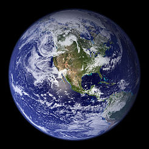

Planeta Tierra
Algunos datos sobre el planeta en el que vivimos
El planeta Tierra es el tercer planeta desde el Sol y es el más grande de los planetas terrestres. A diferencia de los otros planetas en el sistema solar que llevan el nombre de las deidades clásicas del nombre de la Tierra en inglés(Earth) proviene de la palabra anglosajona erda que significa tierra o suelo. La Tierra se formó hace aproximadamente 4,54 billón años y es el único planeta conocido para sustentar la vida.
Sobre el planeta Tierra
- Diámetro ecuatorial: 12,756 km
- Diámetro polar: 12,714 km
- Masa: 5,97 x 1024 kg
- Satélites: 1 (La Luna)
- Distancia de órbita: 149.598.262 km (1 AU)
- Periodo orbital: 365.26 días
- Temperatura de la superficie: -88 to 58ºC
Hechos curiosos sobre la Tierra
- La rotación de la Tierra está desacelerando gradualmente.
- Se pensaba que era el centro del universo.
- Tiene un poderoso campo magnético.
Otros planetas
| Nombre | Diámetro ecuatorial | Temperatura superficial |
|---|---|---|
| Marte | 6.792 km | -87 to -5ºC |
| Venus | 12.104 km | 462ºC |